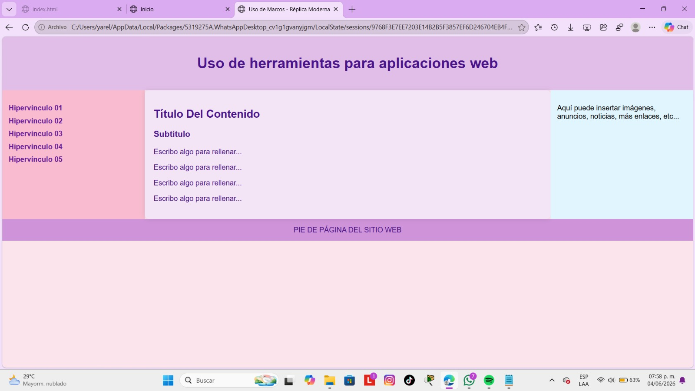

Esta práctica muestra cómo crear una página web utilizando HTML y CSS. Se organiza en diferentes secciones: una cabecera (header), un menú de navegación (nav), un área de contenido principal (main), una barra lateral (aside) y un pie de página (footer). Además, se utilizan estilos CSS para personalizar colores, tamaños, espacios y la distribución de los elementos, logrando una página más atractiva y ordenada.
Volver al inicio